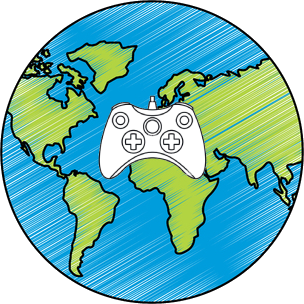
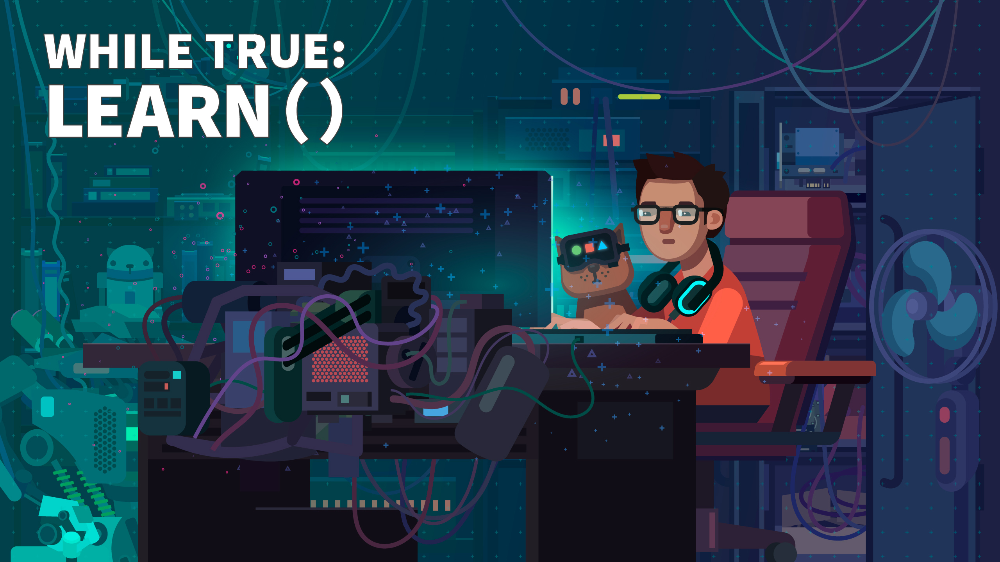
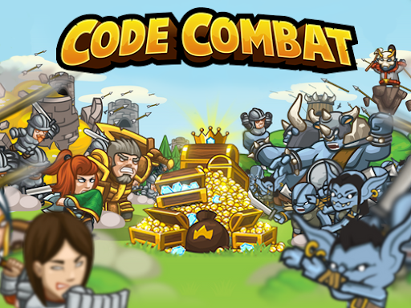
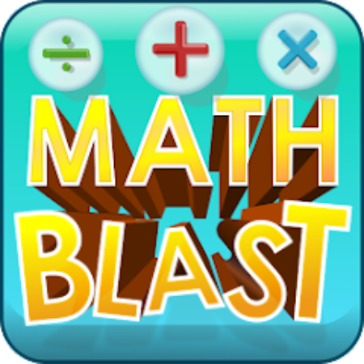
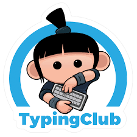
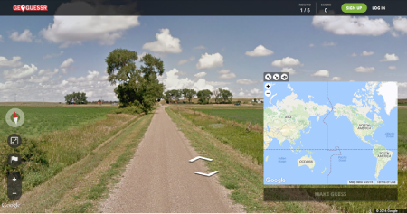

Introduccion
A Través de este artículo veremos cómo los videojuegos pueden ayudarnos en nuestro proceso de aprendizaje y el por que puede llegar a ser muy efectivo si es correctamente aplicado y también veremos diferentes maneras que se pueden aplicar para aprender o enseñar con juegos y videojuegos.
Aprendizaje
¿Qué es el aprendizaje?
es aprendizaje se define como la adquisición del conocimiento de algo por medio del estudio, el ejercicio o la experiencia, en especial de los conocimientos necesarios para aprender algún arte u oficio también como el proceso a través del cual se modifican y adquieren habilidades, destrezas, conocimientos, conductas y valores. Esto como resultado del estudio, la experiencia, la instrucción, el razonamiento y la observación.
por lo que podemos resumir en que el aprendizaje es el proceso por el cual adquirimos conocimientos los cuales modifican comportamientos, habilidades, conocimiento entre otras.
Estilos de aprendizaje
- Visual:A las personas les resulta más fácil aprender por medio de la visión, cuando la información está organizada de forma gráfica.
- Auditivo: Las personas tienen el pensamiento estructurado por medio de palabras. Memorizan conversaciones y retienen fácilmente la información que escuchan.
- Kinestésico: Son aquellos que necesitan poner manos a la obra y les resulta fácil aprender haciendo algo. Tienen más facilidad con dinámicas que impliquen movimiento.

Videojuegos
¿Qué son los videojuegos?
Se puede definir un videojuego como una aplicación interactiva orientada al entretenimiento que, a través de ciertos mandos o controles, permite simular experiencias en la pantalla de un televisor, una computadora u otro dispositivo electrónico.
A Pesar de que esa es su definición en lo más básico los videojuegos también cuentan con diversas características que ayudan a que los jugadores no se pierdan y siempre sepan que hacer un claro ejemplo de esto son los objetivos ya que en la mayoría de los videojuegos los objetivos son muy claros otra cosa que también suelen tener son logros para recompensar a los jugadores por una hazaña que realizaron o por encontrar algún secreto oculto dentro del juego.
Hay diversos géneros de videojuegos como pueden ser juegos de peleas, de acción, aventuras cada uno enfocado a un público específico y dentro de todos estos géneros podemos encontrar los juegos educativos y los serious games que son juegos enfocados ya sea en enseñar algo, crear conciencia de un tema específico con objetivos específicos.

Videojuegos Como Herramienta
Ahora ya habiendo visto lo que es el aprendizaje y los videojuegos veamos cómo se pueden usar estos últimos como herramienta para mejorar el aprendizaje.
El cómo ayudan los videojuegos en el aprendizaje es bastante intuitiva ya que un juego enfocado en aprender una habilidad contiene muchas veces los 3 estilos de aprendizaje ya que visualmente estas viendo que está pasando con las cosas ves de manera gráfica lo que quieres aprender, El audio que se escucha en este tipo de juegos también ayuda ya que el sonido te ayuda a identificar lo que está pasando o lo que debes hacer para completar los objetivos y kinestésicamente también ya que puedes estar haciendo la actividad tu mismo e interactuando de manera que puedes ver que pasa con tus propias manos.
De esta manera puedes ver cómo se juntan todos los canales de aprendizaje en un solo producto que bien aplicado puede ayudar en el proceso de aprendizaje de las personas pero no solo se queda ahí sino que también incentiva a los jugador a repetir la acción que quieren aprender por medio de los logros y ayudando a los jugador a que nunca se pierdan en lo que tienen que hacer hacen que sea más fácil y menos frustrante el proceso de aprendizaje.

Metodologías y Aplicaciones
Actualmente el proceso por el cual podemos enseñar cosas de temas no lúdicos a través del videojuego o juegos se le llama gamificación qué "es aplicar estrategias (pensamientos y mecánicas) de juegos en contextos no jugables, ajenos a los juegos, con el fin de que las personas adopten ciertos comportamientos" y así es como se define pero como dice es la aplicación de estrategias y existen muchas maneras de generar gamificación no solo los videojuegos.
- Puntos y Recompensas: Otorgar puntos por completar tareas o alcanzar logros, con la posibilidad de canjear esos puntos por recompensas como descuentos, productos o privilegios.
- Niveles y Desbloqueables: Dividir el proceso en niveles o etapas, donde los usuarios avanzan al completar tareas específicas, desbloqueando nuevas características o desafíos a medida que avanzan.
- Tablas de Clasificación: Mostrar las puntuaciones y clasificaciones de los usuarios para fomentar la competencia y la superación personal.
- Desafíos y Misiones: Plantear desafíos específicos que los usuarios deben superar para ganar recompensas o avanzar en el juego.
- Historias y Narrativas: Crear historias envolventes o aventuras que los usuarios pueden experimentar mientras avanzan en su proceso.
- Feedback y Retroalimentación: Proporcionar comentarios inmediatos y positivos cuando los usuarios completan tareas o mejoran sus habilidades.
- Competencia y Colaboración: Fomentar la competencia amistosa entre usuarios o la colaboración en equipos para lograr objetivos comunes.
- Personalización: Permitir que los usuarios personalicen avatares, personajes o entornos para sentirse más involucrados en el juego.
- Desafíos de Tiempo: Establecer límites de tiempo para tareas o desafíos, lo que agrega un elemento de urgencia y emoción.
- Logros y Trofeos: Otorgar medallas, insignias o trofeos virtuales por logros significativos o hitos alcanzados, que los usuarios pueden mostrar con orgullo.
Estos son solo algunos ejemplos de cómo se puede aplicar la gamificación para enseñar diferentes procesos y de esta manera también puede hacerse un cambio en la manera de cómo se enseña a nivel global y puede ser algo muy positivo a futuro.
Conclucion
en conclusión los videojuegos realmente pueden ayudar mucho tanto a niños como a adultos a aprender alguna habilidad o adquirir conocimiento si son empleados de una buena manera y utilizando todas las herramientas que los videojuegos nos ofrecen para disfrutarlo en el proceso y si bien no es viable para todo el mundo ya que existen diversos factores que pueden limitar mucho el acceso a los videojuegos muchos también pueden salir beneficiados si encuentran la manera de aplicarlo a sus vidas.
| Juego | Tema | Link | Imagen |
|---|---|---|---|
| while True: learn() | Machine learning y redes neuronales | Link |  |
| CodeCombat | programacion | Link |  |
| Math Blaster | Matematicas | Link |  |
| TypingClub | Mecanografia | Link |  |
| Geoguessr | Geografia | Link |  |